Every fabric in our range is chosen with one goal in mind. The right quality, at the right price,
for the modern womenswear manufacturer. From Lenzing certified fibres to Liva accredited yarns,
every fabric we source meets a standard your customer can feel.
Cotton
Sourced from the finest cotton belts of Southern India, our compact
cotton is tightly spun for a smooth surface, superior strength, and a clean finish that holds
its shape wash after wash.


Viscose
Spun from Pallava grade yarn, our rayon and viscose fabrics offer
an exceptional softness and fluid drape, bringing effortless elegance to every womenswear
silhouette.
Lyocell
Made with Lenzing certified yarn, our lyocell and modal fabrics
deliver a silky hand feel, excellent moisture management, and a refined finish that is gentle
on the skin and the planet.


Synthetic Fibres
Engineered for both beauty and comfort. Our bio-washed synthetic
weaves are treated to sit softly against the skin, with a rich sheen that elevates
any garment.
Our Approach towards Sustainability
Natural Fiber Selection
We prioritize natural materials like premium cotton while
consciously minimizing our reliance on polyester, maintaining the natural integrity of
our collections.
Transparent Supply Chain
We partner strictly with certified mills and ethical suppliers,
ensuring full visibility and accountability across every step of our sourcing
process.

Responsible Processing
We work exclusively with leading process houses that utilize
low-impact methods to significantly reduce harmful chemicals and conserve water
during dyeing.
Waste Reduction and Management
Our manufacturing operations are designed for efficiency,
actively minimizing fabric wastage and offcuts to reduce our overall environmental
footprint.